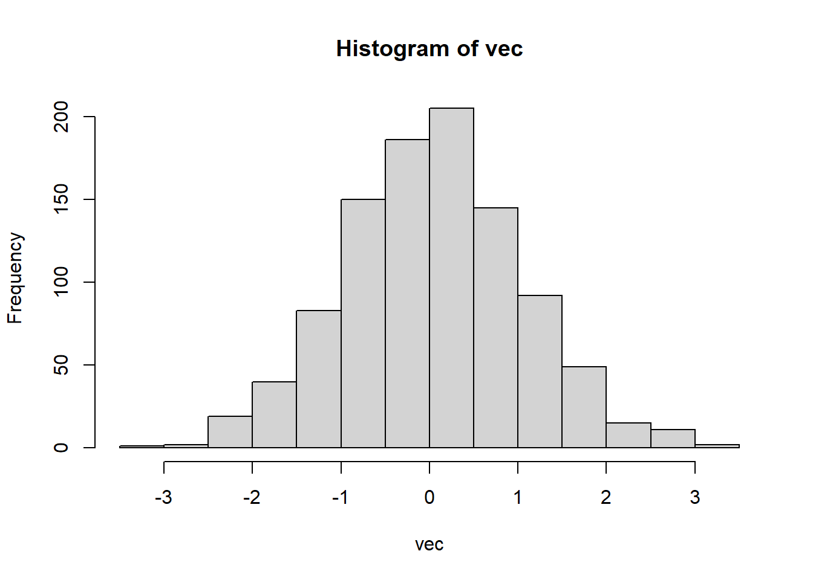

Chapter 2 Exponential Smoothing
2.1 Organizing your ideas
Imagine you are writing for your fellow Honours students. Topics that are well-known to them do not have to be included here. But things that they may not know about should be included. Resist the temptation to discuss everything you’ve read in the last year.
Do not organize your chapter around the papers you have read with one section per paper. Instead, you should organize your chapters around themes, and within each theme provide a story explaining the development of ideas. It is usually helpful to plan out a table of contents first with major section headings.
When you are discussing results from several papers or books, you will need to adopt a common notation to ensure your chapter makes sense. Do not use different notation for the same thing.
2.2 Citations
All citations should be done using markdown notation as shown below. This way, your bibliography will be compiled automatically and correctly.
Exponential smoothing was originally developed in the late 1950s [@Brown59;@Brown63;@Holt57;@Winters60]. Because of their computational simplicity and interpretability, they became widely used in practice.
Empirical studies by @MH79 and @Metal82 found little difference in forecast accuracy between exponential smoothing and ARIMA models. This made the family of exponential smoothing procedures an attractive proposition [see @CKOS01].
The methods were less popular in academic circles until @OKS97 introduced a state space formulation of some of the methods, which was extended in @HKSG02 to cover the full range of exponential smoothing methods.
2.3 External Scripts
You can include scripts that are not directly embedded
into the Rmd format
by using code=xfun::read_utf8("path/scripts/script.R") in the chunk options eg:
{r echo=TRUE, code=xfun::read_utf8('scripts/histnorm.R')}:
# histnorm.R
# Takes 1000s draws of a normal distribution and plots it's histogram
# draw samples
vec <- rnorm(1000)
# plot histogram
hist(vec) or by using labelled blocks in your script and using them as individual chunks